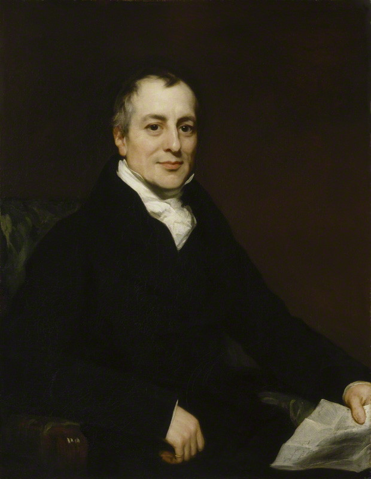

David Ricardo viveu entre os anos 1772-1823 e viveu sua vida em Londres (Inglaterra); Ele defendia que os países deveriam se especializar na produção dos bens em que tivessem maior vantagem relativa, beneficiando-se do comércio internacional; Sua principal obra foi Princípios de Economia Política e Tributação (1817) sua obra mais importante, onde desenvolve suas teorias sobre valor, comércio internacional e renda da terra; Ele influenciou fortemente o liberalismo econômico e a defesa do livre-comércio, ajudando a derrubar as Leis dos Cereais no Reino Unido, seu pensamento ajudou a fundamentar o capitalismo e influenciou economistas como Karl Marx, John Stuart Mill e economistas neoclássicos; Suas principais críticas a políticas e ideias econômicas predominantes em sua época, especialmente contra o protecionismo, a teoria do valor-trabalho de Adam Smith e o pessimismo de Malthus.